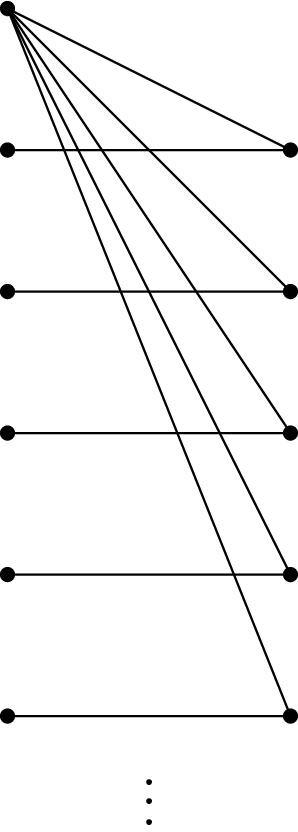

December 3rd
Today I learned about Hall's Marriage Theorem. This is the statement that a bipartite graph $G$ (divided into $A$ and $B$) with $|A|=|B|$ has a perfect matching if and only if any subset of vertices of $A$ has at least as many neighbors in $B$ than vertices in the subset. Call this second condition "happy.''
To get a feeling for this condition, one direction of this statement is easy. Indeed, if there existed a perfect matching, then for any subset of vertices $A'\subseteq A,$ we can follow the edge of the perfect matching of $A'$ to produce a unique neighbor in $B.$ So there are at least as many neighbors in $B$ as there are vertices in our subset $A'.$ It follows that our bipartite graph is happy.
The reverse implication is harder. We show the statement by induction on the number of vertices in $|A|.$ I guess we could make our base case $|A|=0,$ for which there isn't anything to prove, but this isn't helpful. If $|A|=1,$ then being happy forces the subset $\{a\}=A$ to have at least one neighbor in $B,$ which is the only vertex in $B.$ So our graph looks like the following.
The perfect matching in this happy graph is drawn for us.
It remains to show the inductive step. Suppose that all happy graphs with $|A|{\lt}n$ have a perfect matching so that we want to show all graphs with $|A|=n$ do. We will technically run this as an induction on the number of edges in the graph, but there is no point in saying that explicitly. Anyways, pick up any happy graph $G$ with $|A|=n$ so that we want to show it has a perfect matching.
The main idea is that we can continue to subtract off vertices from $G$—while keeping $G$ happy—until $G$ has been divided into two separate components, letting us trigger induction. Basically, if for all nonempty subsets $A'$ of $A,$ the number of neighbors is strictly larger than the number of elements of $A',$ then we can subtract off any edge, and $G$ will still be happy. Indeed, now a subset $A'\subseteq A$ either wasn't affected by this subtraction, or it was subtracted by one, and the number of neighbors is still at least $|A'|.$
It remains to deal with the case where there exists a nonempty subset $A'\subseteq A$ which has exactly $|A'|$ neighbors $B'$ in $B.$ Note that the subgraph induced by the vertices\[A'\cup B'\]is happy because any subset of $A'$ (looking up in $G$) will have at least as many neighbors in $B,$ but all those neighbors live in $B',$ so the happiness condition gets inherited from $G$ directly. It's a bit harder to show that the subgraph $H$ of $G$ induced by the vertices\[(A\setminus A')\cup(B\setminus B')\]is happy. Essentially, for any subset of vertices of $A\setminus A'$ named $A'',$ we note that the number of neighbors of $A''\cup A'$ (looking up in $G$) in $B$ is at least $|A''|+|A'|$ because $G$ is happy. Extracting the vertices which live in $B'$ leaves us with at least\[|A''|+|A'|-|B'|=|A''|\]vertices because $|A'|=|B'|.$ Thus this subgraph is also happy.
It follows that we have divided $G$ into two subgraphs induced by vertices which are both smaller than $G$ ($A'$ is nonempty) and therefore have perfect matchings by the induction. It follows that the union of these two perfect matchings will be a valid perfect matching of $G.$ So we are done here.
As an aside, this induction is somewhat necessary because this statement fails for infinite graphs. Here is a counterexample.
Indeed, let the left-hand vertex set be $A=\{0,1,2,\ldots\}$ and the right-hand vertex set be $B=\{1,2,\ldots\}$ so that $\{a,b\}$ is an edge if and only if $a\in A$ and $b\in B$ with $a=0$ or with $a=b$ (or with $a$ and $b$ reversed). This is happy because either our subset of $A$ contains $0$ or does not. If containing $0,$ the set of neighbors is countably infinite directly implying that the set of vertices in $A$ is no more than the neighbors. If not containing $0,$ then each $a\in A\setminus\{a\}$ is associated just on the other side with a vertex in $B.$
However, this graph has no perfect matching. Indeed, $0$ would have to connect somewhere, say $b\in B.$ But then $b$'s only other neighbor in $A$ is left with no friends, breaking our ability to create a perfect matching.